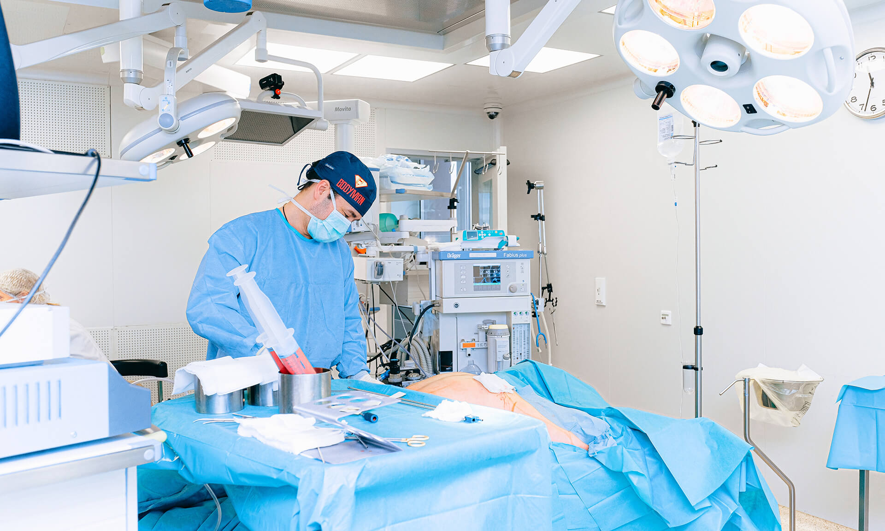

Bienvenidos a la Clínica San Francisco
Brindamos servicios médicos de alta calidad con un enfoque humano y profesional. Nuestra prioridad es su salud y la de su familia, ofreciendo instalaciones modernas y atención personalizada.
Leer más
Tecnología Médica de Vanguardia
Contamos con equipos de última generación para diagnósticos precisos y tratamientos efectivos. Innovamos constantemente para ofrecerle la mejor experiencia médica y resultados confiables.
Leer más
Especialistas Comprometidos
Nuestro equipo de médicos especialistas está altamente calificado para atender diversas áreas de la salud, garantizando un cuidado integral y cercano en cada una de sus consultas.
Leer másChequeos Médicos
Exámenes integrales para monitorear su estado de salud y prevenir enfermedades a tiempo.
Especialidades
Contamos con un equipo de especialistas listos para brindarle la mejor atención en diversas áreas.
Urgencias 24/7
Atención médica inmediata y equipamiento necesario para manejar cualquier situación de urgencia.
Unidad de Diagnóstico
Laboratorio y centro de imágenes avanzado para obtener resultados certeros y rápidos.
¿Tiene una emergencia? ¿Necesita ayuda ahora?
Nuestro equipo de guardia está disponible las 24 horas del día para brindarle la asistencia médica que necesita. No dude en contactarnos o acudir directamente a nuestras instalaciones en caso de urgencia.
Agenda una citaAcerca de nosotros
Líderes en salud integral, comprometidos con la excelencia médica y el bienestar de nuestra comunidad.
Comprometidos con su salud y bienestar integral.
Nuestra misión es proporcionar servicios de salud excepcionales, combinando experiencia médica con un trato humano y cercano.
- Atención de emergencias y urgencias las 24 horas del día.
- Staff de médicos especialistas certificados en diversas disciplinas.
- Infraestructura moderna y equipamiento de última generación para su seguridad.
En la Clínica San Francisco, entendemos que cada paciente es único. Por ello, nos esforzamos por ofrecer diagnósticos precisos y tratamientos personalizados en un ambiente seguro y profesional, respaldado por años de experiencia en el sector salud.
Doctores
Departamentos
Laboratorios
Reconocimientos

Nuestros Servicios Especializados
Contamos con unidades de apoyo diagnóstico de alta complejidad para garantizar resultados precisos y confiables en el menor tiempo posible.
Laboratorio Clínico
Realizamos una amplia gama de análisis clínicos con estándares internacionales de calidad y tecnología automatizada.
Centro de Imágenes
Servicios de Rayos X, ecografías y tomografías con equipos digitales que reducen la exposición y mejoran la nitidez diagnóstica.
Programas Preventivos
Chequeos médicos integrales diseñados para la detección temprana de enfermedades y la promoción de un estilo de vida saludable.
Atención Preferencial
Gestión eficiente de citas y convenios con las principales aseguradoras para facilitar su acceso a la salud.
Servicios adicionales
Estamos comprometidos con brindar una atención médica de calidad, enfocada en la seguridad y el bienestar de nuestros pacientes.
Cardiología
Atención especializada para la prevención, diagnóstico y tratamiento de enfermedades del corazón y sistema circulatorio.
Medicina General
Consultas integrales para el diagnóstico y tratamiento de patologías comunes, con un enfoque en la salud preventiva.
Pediatría
Cuidado médico dedicado al crecimiento y bienestar de los más pequeños, desde el nacimiento hasta la adolescencia.
Ginecología
Especialistas en la salud reproductiva y el cuidado integral de la mujer en todas las etapas de su vida.
Fisioterapia
Programas de rehabilitación física personalizados para recuperar la movilidad y mejorar su calidad de vida diaria.
Gastroenterología
Diagnóstico y tratamiento de enfermedades del sistema digestivo con tecnología avanzada y atención experta.
AGENDA UNA CITA
Estamos comprometidos con brindar una atención médica de calidad, enfocada en la seguridad y el bienestar de nuestros pacientes.
Departamentos
Estamos comprometidos con brindar una atención médica de calidad, enfocada en la seguridad y el bienestar de nuestros pacientes.
Cardiología
Especialistas en el cuidado del corazón y la prevención de enfermedades cardiovasculares.
Nuestra unidad de cardiología ofrece diagnósticos avanzados, incluyendo ecocardiogramas y pruebas de esfuerzo. Nos enfocamos en el tratamiento integral de la hipertensión, arritmias y otras condiciones cardíacas con un enfoque preventivo y terapéutico de vanguardia.

Neurología
Atención especializada para trastornos del cerebro y el sistema nervioso.
Contamos con neurólogos expertos para el diagnóstico y tratamiento de migrañas, trastornos del sueño, epilepsia y enfermedades neurodegenerativas. Utilizamos tecnología diagnóstica avanzada para brindar soluciones efectivas y mejorar la calidad de vida de nuestros pacientes.

Algología (Manejo del Dolor)
Especialistas en el alivio del dolor crónico y agudo para mejorar su bienestar.
Nuestra unidad de Algología se dedica al tratamiento paliativo y terapéutico del dolor persistente. A través de técnicas modernas e intervenciones personalizadas, ayudamos a nuestros pacientes a recuperar su funcionalidad y reducir el sufrimiento físico asociado a diversas condiciones médicas.

Pediatría
Cuidado integral para la salud y el desarrollo de sus hijos, desde el nacimiento.
En el departamento de pediatría, brindamos atención médica preventiva y curativa para niños y adolescentes. Realizamos controles de crecimiento y desarrollo, vacunación y tratamiento de enfermedades comunes, siempre con un trato amable y especializado para los más pequeños.

Oftalmología
Especialistas en la salud visual y el tratamiento de enfermedades oculares.
Nuestra unidad de oftalmología ofrece exámenes de agudeza visual, diagnóstico de cataratas, glaucoma y otras patologías oculares. Contamos con tecnología para la corrección visual y el seguimiento de la salud ocular de toda la familia.

Testimonios
Estamos comprometidos con brindar una atención médica de calidad, enfocada en la seguridad y el bienestar de nuestros pacientes.
La atención en la Clínica San Francisco fue excepcional. El personal médico demostró gran profesionalismo y calidez desde el primer momento. Me sentí muy seguro y bien cuidado.

Ricardo Pérez
Paciente de Cardiología
Excelente servicio y tiempos de espera cortos. Los resultados de mis exámenes de laboratorio estuvieron listos antes de lo esperado. Sin duda, la mejor clínica de la región.

María García
Paciente de Ginecología
Llevé a mi hijo por una urgencia y nos atendieron de inmediato. Los pediatras son muy pacientes y explican todo con claridad. Estamos muy agradecidos por su ayuda.

Ana Martínez
Madre de familia
Instalaciones impecables y tecnología de punta. Me realicé una tomografía y el equipo fue muy amable, explicándome cada paso del proceso. Recomendado al 100%.

Carlos Rodríguez
Paciente de Radiología
Destaco la facilidad para agendar citas por la web y la puntualidad de los doctores. Es un alivio contar con una clínica tan organizada y eficiente en Chachapoyas.

Elena Torres
Paciente recurrente
Doctores
Estamos comprometidos con brindar una atención médica de calidad, enfocada en la seguridad y el bienestar de nuestros pacientes.

Dr. Rolando Ramos
Director Médico
Dra. Lucía Mendoza
Anestesióloga
Dr. Javier Torres
Cardiólogo
Dra. Elena Castro
NeurocirujanaGalería
Estamos comprometidos con brindar una atención médica de calidad, enfocada en la seguridad y el bienestar de nuestros pacientes.


Nuestros Planes y Servicios
Ofrecemos diversas opciones de atención para adaptarnos a sus necesidades, garantizando siempre la mejor calidad médica.
Consulta General
S/30 / sesión
- Evaluación médica inicial
- Control de funciones vitales
- Receta médica digital
- Exámenes de laboratorio
- Interconsulta especialista
Chequeo Básico
S/80 / paquete
- Consulta Medicina General
- Hemograma completo
- Examen de glucosa
- Perfil lipídico básico
- Ecografía abdominal
Chequeo Integral
S/150 / paquete
- Todo lo del plan Básico
- Ecografía integral
- Electrocardiograma
- Consulta con Especialista
- Informe médico detallado
Especialidad
S/50 / sesión
- Consulta especializada
- Evaluación técnica profunda
- Seguimiento de caso
- Prioridad en citas
- Acceso a telemedicina
Preguntas Frecuentes
Estamos comprometidos con brindar una atención médica de calidad, enfocada en la seguridad y el bienestar de nuestros pacientes.
¿Cómo puedo agendar una cita médica?
Puede agendar su cita directamente a través de nuestra página web en la sección "Agenda una cita", llamándonos a nuestra central telefónica o acercándose personalmente a nuestras instalaciones.
¿Cuáles son los horarios de atención?
Atendemos de lunes a sábado de 8:00 AM a 8:00 PM. Sin embargo, nuestro servicio de emergencias está disponible las 24 horas del día, los 7 días de la semana.
¿Qué especialidades médicas ofrecen?
Contamos con una amplia variedad de especialidades, incluyendo Medicina General, Cardiología, Pediatría, Ginecología, Gastroenterología, Odontología y más.
¿Aceptan seguros médicos o convenios?
Sí, trabajamos con las principales aseguradoras y EPS del país. Le recomendamos consultar con nuestro personal administrativo sobre los convenios específicos vigentes.
¿Cuánto tiempo tardan los resultados de laboratorio?
La mayoría de los resultados de análisis rutinarios están listos en un plazo de 24 horas. Algunos exámenes especializados pueden requerir más tiempo, lo cual le será informado al momento de la toma.
¿Qué debo llevar para mi primera consulta?
Para su primera consulta, le solicitamos traer su documento de identidad (DNI o pasaporte), cualquier informe médico previo, resultados de exámenes recientes y su carnet de seguro si cuenta con uno.
Contáctanos
Estamos comprometidos con brindar una atención médica de calidad, enfocada en la seguridad y el bienestar de nuestros pacientes.
Dirección
Jr. Hermosura 123, Chachapoyas, Amazonas
Llámanos
959211544
Escríbenos
contacto@clinicasanfrancisco.com.pe